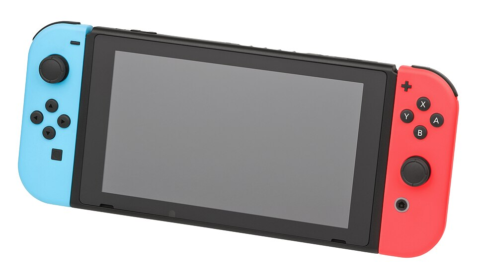

Nintendo Switch
Viena konsole spēlēšanai gan mājās, gan ceļā.
Switch var izmantot gan pie televizora, gan kā pārnēsājamu konsoli. Noņemamās Joy-Con pultis piedāvā vairākus spēlēšanas veidus.

Viena konsole spēlēšanai gan mājās, gan ceļā.
Switch var izmantot gan pie televizora, gan kā pārnēsājamu konsoli. Noņemamās Joy-Con pultis piedāvā vairākus spēlēšanas veidus.